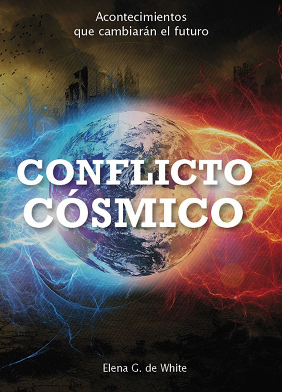

"El Espíritu Santo y el tiempo del fin". Participa con nosotros cada mañana desde San Francisco de Limache.
Tu pedido será presentado ante el Señor en comunidad
Cristo, nuestro Sumo Sacerdote, intercede por nosotros en el lugar santísimo.
El último llamado de misericordia al mundo. Adorar al Creador.
"No tenemos nada que temer del futuro, a menos que olvidemos la manera en que el Señor nos ha conducido..." — Elena G. de White
